Chords-Web#
Overview#
Chords-Web is an open-source web application for real-time visualization of bio-potential signals like EEG, EMG, ECG and EOG. It is an advanced alternative to the standard Arduino IDE serial plotter, made for students, researchers and hobbyists who want to record biopotential data using BioAmp hardware.
Chords-Web runs completely in your browser - there is nothing to install. Open chords.upsidedownlabs.tech, connect your board over USB or Bluetooth, and start visualizing.
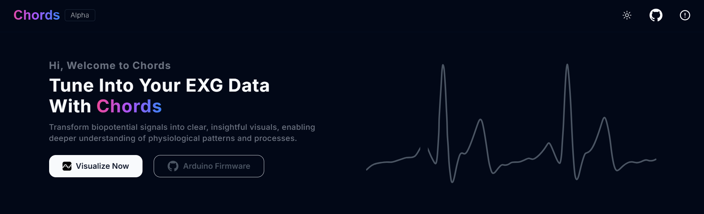
Chords-Web Landing Page#
Note
Chords-Web is made for educational and research purposes. It is not medical software and must not be used for diagnosis.
Quick Start#
If you are new to Chords-Web, follow these five steps. Each step is explained in detail in the sections below.
Hardware: Connect your BioAmp sensor to a supported development board and place the electrodes on your body.
Firmware: Upload the Chords firmware to your board (see Uploading the Firmware).
Open Chords-Web: Go to chords.upsidedownlabs.tech in a supported browser and click Visualize Now.
Connect: Click Serial (USB cable) or BLE (Bluetooth, NPG Lite only) in the bottom bar and select your device.
Choose a view: Use the app switcher in the bottom bar to open the Chords Visualizer, FFT Visualizer, Rep-Forge or ECG Visualizer.
Requirements#
Browser Compatibility#
Chords-Web talks to your board directly from the browser using these web APIs:
Web Serial API: to connect boards over a USB cable.
Web Bluetooth API: to connect the NPG Lite over Bluetooth Low Energy (BLE).
WebUSB API: to update the firmware of some boards from the browser.
Not every browser supports all three APIs, so some features may not work in your browser:
Browser |
Serial (USB) |
Bluetooth (BLE) |
Firmware update |
|---|---|---|---|
Google Chrome, Microsoft Edge, Opera |
Yes |
Yes |
Yes (all boards) |
Mozilla Firefox 151 or later |
Yes |
No |
Some boards only |
Safari |
No |
No |
No |
For all features, use the latest version of Google Chrome, Microsoft Edge or Opera. Firefox supports Web Serial from version 151. Older Firefox versions can’t connect to your board and will show the unsupported browser message.
If your browser does not support the Web Serial API, Chords-Web shows a message telling you to switch to a supported browser.
Warning
Using Firefox 151 or later? You can connect your board over Serial and use all the applications. But Firefox doesn’t support Web Bluetooth or WebUSB, so:
The BLE button won’t work, so you can’t connect the NPG Lite over Bluetooth. Connect it over Serial instead.
The in-browser firmware update doesn’t work for boards that are flashed over WebUSB: Arduino UNO R4 Minima, Arduino GIGA R1, STM32G4 Core Board, STM32F4 Black Pill and Raspberry Pi Pico. Update these boards using Chrome/Edge or the Arduino IDE. Other boards can be updated in Firefox, because they are flashed over Web Serial.
Important
Chords-Web works only on desktop/laptop computers. If you open it on a phone, you will see an “Oops! Mobile Detected” message.
Tip
Brave is Chromium-based, but it turns off Web Serial and Web Bluetooth by default. If you use Brave, enable them from brave://settings/content or use Chrome/Edge instead.
For more information, refer to MDN Web Docs on the Web Serial API and the Web Bluetooth API.
Software Requirements#
Chords firmware on your board. You can upload it in any of these ways:
Directly from Chords-Web (see Option 1: Update firmware from Chords-Web (Recommended)).
Using the Arduino IDE and the Chords Arduino Firmware.
Using the NPG Lite Flasher Web (in your browser) or the NPG Lite Flasher (desktop app) for the NPG Lite or other ESP32 based boards.
Hardware Requirements#
A supported development board (or an NPG Lite, which has a built-in BioAmp).
A USB cable (type depends on your board).
BioAmp Hardware and its accessories (cables, electrodes, gel).
Supported Boards#
Chords-Web detects your board automatically and sets the ADC resolution, number of channels and sampling rate for you.
Board |
ADC Resolution |
Channels |
Sampling Rate |
Connection |
|---|---|---|---|---|
Arduino UNO R3 / Genuino UNO / Maker UNO (UNO clone) |
10-bit |
6 |
250 Hz |
Serial |
Arduino Nano Classic / Nano clone |
10-bit |
8 |
250 Hz |
Serial |
Arduino MEGA 2560 R3 / MEGA 2560 clone |
10-bit |
16 |
250 Hz |
Serial |
Arduino UNO R4 Minima / UNO R4 WiFi |
14-bit |
6 |
500 Hz |
Serial |
Arduino GIGA R1 |
16-bit |
6 |
500 Hz |
Serial |
Raspberry Pi Pico (RP2040) |
12-bit |
3 |
500 Hz |
Serial |
STM32G4 Core Board |
12-bit |
16 |
250 Hz |
Serial |
STM32F4 Black Pill (STM32F401CC / STM32F411CE) |
12-bit |
8 |
500 Hz |
Serial |
ESP32-S3 |
12-bit |
16 |
250 Hz |
Serial |
NPG Lite (3 channel / 6 channel) |
12-bit |
3 or 6 |
500 Hz |
Serial or BLE |
Tip
You can also use any other microcontroller, as long as it sends data in the Chords data format.
Setting up the Hardware#
Make all the connections for the hardware you are using:
Connect the BioAmp sensor to the analog input pins of your development board.
Connect the electrodes from the BioAmp sensor to your body.
Connect the development board to your laptop using a USB cable.
You can see diagrams of these connections (cable connections, BioAmp to board connections and electrode placement for ECG and EOG) on the Chords-Web page after you click Visualize Now, before you connect a device.
Uploading the Firmware#
Your board needs the Chords firmware so that it can send data to Chords-Web. Choose any one of the options below.
Option 1: Update firmware from Chords-Web (Recommended)#
You don’t need the Arduino IDE for this option.
Connect your board to your laptop with a USB cable.
Open chords.upsidedownlabs.tech, click Visualize Now and then click Serial.
Select your board’s port and click Connect.
If the board is supported but doesn’t have the latest Chords firmware, a “Your firmware is not updated” dialog opens.
If several boards share the same USB ID (for example, UNO clones and Nano clones), select which board you have.
Click Flash firmware. Chords-Web downloads the latest firmware release and uploads it to your board.
When it shows Firmware updated, Chords-Web reconnects to your board automatically.
Note
STM32 boards: If the board is still in normal mode, put it in boot mode first. Hold BOOT0, tap NRST, release BOOT0, and click Flash firmware again.
Windows: Some boards need a USB driver before they can be flashed (only once per PC). If flashing doesn’t start within 15 seconds, follow the steps in the dialog to install the driver using ChordsDriverSetup.exe or Zadig (choose WinUSB and click Install Driver). Then replug the board and click Flash firmware again.
Option 2: Upload firmware with the Arduino IDE#
Connect your board to your laptop with a USB cable.
Go to the Chords Arduino Firmware GitHub repository, scroll to the supported boards table and open the sketch for your board.
Copy the sketch and paste it into the Arduino IDE.
Go to
Tools > Boardand select your board.Go to
Tools > Portand select your board’s port. This is the port that disappears when you unplug the board:Windows:
COM3,COM4, etc.Linux:
/dev/ttyACM0or/dev/ttyUSB0macOS:
/dev/cu.usbmodem...or/dev/cu.usbserial...
Click the Upload button.
Close the Arduino IDE Serial Monitor/Plotter (only one app can use the port at a time) and open Chords-Web.
Option 3: NPG Lite and ESP32 boards#
Use one of these tools to upload the Serial or BLE firmware to your NPG Lite or any ESP32 based board:
NPG Lite Flasher Web: Runs in your browser, nothing to install. Open upsidedownlabs.github.io/NPG-Lite-Flasher-Web, click Connect Device, select the BLE or Serial firmware and click Flash Firmware.
NPG Lite Flasher: A desktop app for Windows, macOS and Linux.
Connecting to Chords-Web#
Open a supported browser and go to chords.upsidedownlabs.tech.
Click Visualize Now.
The images in the center show how to connect your hardware.
The bottom bar has three buttons:
BLE: Connect an NPG Lite over Bluetooth.
Serial: Connect any supported board over a USB cable.
Serial Wizard: Open the Serial Wizard Plotter & Monitor.
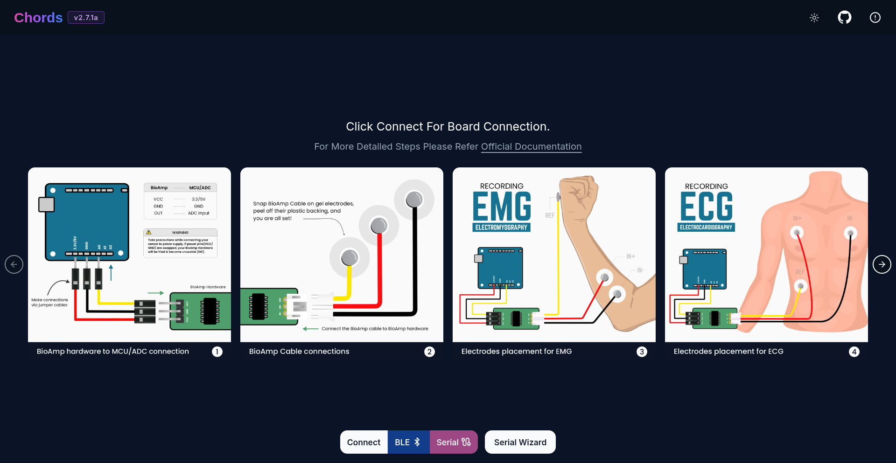
Chords-Web Connect Page#
Connecting over Serial (USB)#
Click Serial.
Your browser shows a list of serial ports. Select your board and click Connect.
Chords-Web detects your board, and the Chords Visualizer starts plotting your signals.
Linux: Board not listed or “permission denied”
On Linux your user must be allowed to access serial ports. Add yourself to the right group, then log out and log back in:
Arch / Manjaro:
sudo usermod -aG uucp $USER
Ubuntu / Debian:
sudo usermod -aG dialout $USER
Connecting over Bluetooth (NPG Lite)#
The NPG Lite can stream data wirelessly over Bluetooth Low Energy (BLE). It has a built-in BioAmp and a 12-bit ADC (ESP32-C6), so you don’t need any other development board.
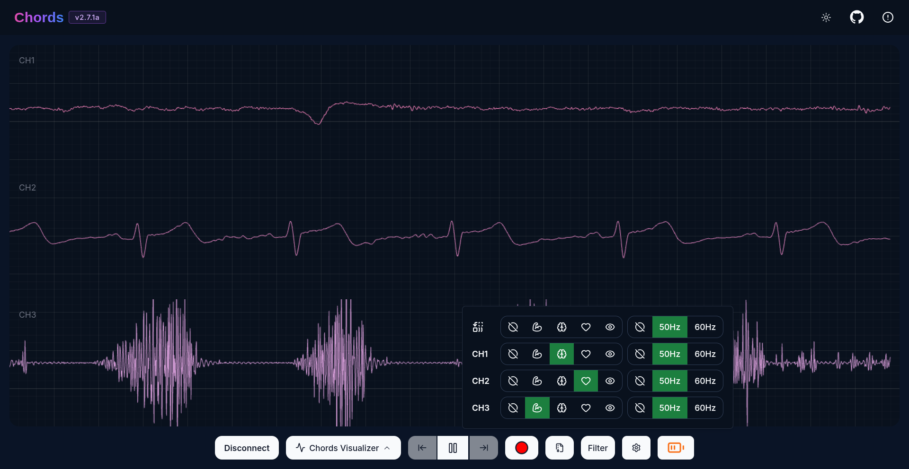
Chords-Web NPG Lite#
Flash the BLE firmware: Use the NPG Lite Flasher Web or the NPG Lite Flasher to upload the BLE firmware (3 channel or 6 channel) to your NPG Lite.
Power on the NPG Lite using its on/off switch.
Turn on Bluetooth on your computer.
Open Chords-Web, click Visualize Now and then click BLE.
Select your NPG Lite (its name starts with
NPG) from the list and click Pair.Your signals start plotting. You can now use any of the applications below.
Features over BLE:
Feature |
Description |
|---|---|
Wireless Streaming |
Stream 3 or 6 channels of biopotential data at 500 Hz without a cable. |
Battery Indicator |
The bottom bar shows the battery level of your NPG Lite. You get a warning when the battery is low and a message when it is fully charged (3CH/6CH firmware only). |
Interactive Controls |
Select channels, play/pause the stream, apply filters and record to CSV, just like over Serial. |
Note
If you don’t see the battery level, your NPG Lite has older BLE firmware. Update it with the NPG Lite Flasher Web or the NPG Lite Flasher.
Note
Checkout our YouTube video for more information:
Common Controls#
These controls are in the bottom bar and work in all the applications, unless mentioned otherwise.
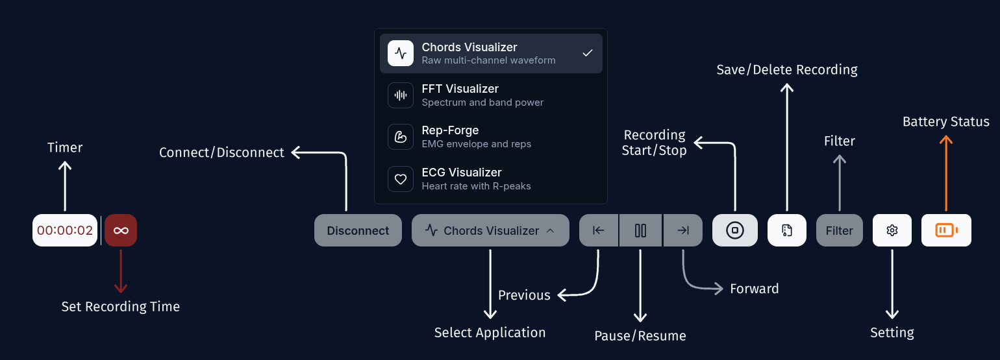
Chords-Web Icons#
App Switcher#
After you connect, use the app switcher in the bottom bar to move between the four applications. You don’t need to reconnect your board when you switch.
Chords Visualizer: Raw multi-channel waveform.
FFT Visualizer: Spectrum and EEG band power.
Rep-Forge: EMG envelope and muscle strength.
ECG Visualizer: Heart rate with R-peaks.
Note
Filters are reset every time you switch to another application, so a filter you chose in one view doesn’t keep running in another.
Play/Pause and Data Windows#
Click Pause to freeze the screen on the current data window.
While paused, use the Previous Data Window (left) and Next Data Window (right) buttons to go back through up to 5 earlier data windows.
Click Play to continue the live stream.
Changing the selected channels resets the saved data windows.
Pause is not available while recording.
Settings (Zoom, Time Base and Channels)#
Click the Settings icon to open the settings popover:
Zoom Level: Zoom from 1x to 10x to see small signal details or the full signal.
Time Base: Show 1 to 10 seconds of data on the screen.
Channels: Select the channels you want to plot. The number of available channels depends on your board (up to 16). Use Select All to choose all channels and Reset to go back to your previous selection.
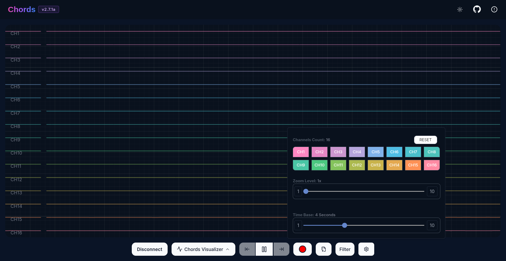
Chords-Web Channel Support#
Filters#
Click Filter to clean up your signal. You can apply a filter to one channel or to all channels at once using the master buttons at the top.
Filter |
Type |
Use it for |
|---|---|---|
Muscle |
70 Hz high-pass |
EMG (muscle) signals |
Heart |
30 Hz low-pass |
ECG (heart) signals |
Eye |
10 Hz low-pass |
EOG (eye) signals |
Brain |
45 Hz low-pass |
EEG (brain) signals |
50 Hz / 60 Hz |
Notch |
Removes power line noise. Use 50 Hz in India, Europe, etc. and 60 Hz in the USA, etc. |
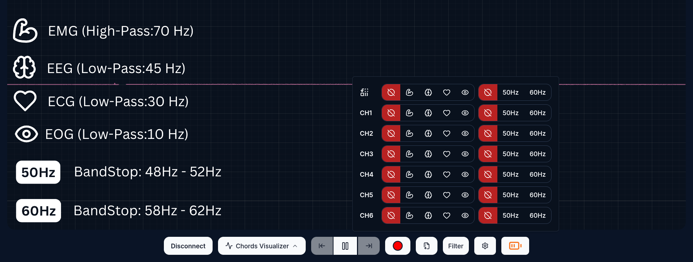
Chords-Web Filters#
Note
A 1 Hz high-pass filter is always applied to remove DC drift, even when no other filter is selected.
The Muscle, Heart, Eye and Brain filters are available in the Chords Visualizer. Rep-Forge has only the Muscle filter and the 50/60 Hz notch filter.
Recording the Data#
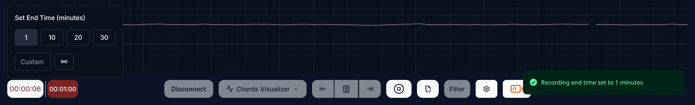
Recording Time#
Click the Record (red circle) button to start recording in CSV format.
To stop automatically, set an end time: choose 1, 10, 20 or 30 minutes, or type your own time in minutes. You can also record without a time limit and click Stop when you are done.
Recordings can be at most 24 hours (1440 minutes) long.
Recorded files are saved in your browser (using IndexedDB), so they are not lost if you disconnect your board. Click the Files button to manage them:
Download or delete a single file.
Download All as Zip or Delete All with one click.
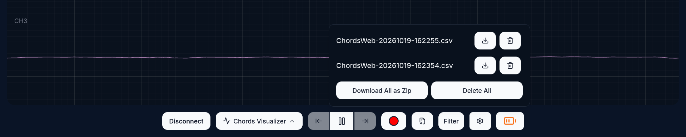
Save and Delete Option#
Each CSV file has a Counter column followed by one column per selected channel (Channel1, Channel2, …). You can plot these files with the Chords CSV Plotter.
Disconnecting#
Click the Disconnect button to stop the data stream and disconnect your board.
Other Options to Explore#
Switch Theme: Switch between light and dark mode using the theme button in the navigation bar.
Version: The navigation bar shows the version of Chords-Web you are using.
GitHub Repository: Open the Chords-Web GitHub repository using the link in the navigation bar.
Contributors: See the list of contributors using the link in the top-right corner of the navigation bar.
Applications#
Chords Visualizer#
The Chords Visualizer is the default application. It plots your raw biopotential signals from multiple channels in real time. Use it to monitor EMG, ECG, EOG or EEG signals, apply filters and record your data.
Features#
Feature |
Description |
|---|---|
Auto Board Detection |
Instantly detects BioAmp Hardware running the Chords firmware and sets the ADC resolution, channels and sampling rate automatically. |
Real-time Visualization |
Smooth, real-time data rendering powered by WebGL-Plot. |
Multi-channel Plotting |
Plots up to 16 channels, depending on your board, each in a different color. |
Data Windows |
Pause and go back through the last 5 data windows. |
Zoom & Time Base |
Zoom from 1x to 10x and show 1 to 10 seconds of data on the screen. |
Filters |
Muscle, Heart, Eye and Brain filters, and 50/60 Hz notch filters, per channel or for all channels. |
Recording & Data Management |
Record data in CSV format with or without a timer. Download or delete files individually or as a ZIP. |
Running the Application#
Connect your board (see Connecting to Chords-Web). The Chords Visualizer opens automatically.
Open Settings to select channels and adjust the zoom and time base.
Click Filter and choose a filter for the signal you are recording (for example, Muscle for EMG).
Click Record to save your data, and use the Files button to download it.
Visualizing EMG (Electromyography) signals#
EMG captures the electrical activity produced by skeletal muscles. Use the Muscle filter.

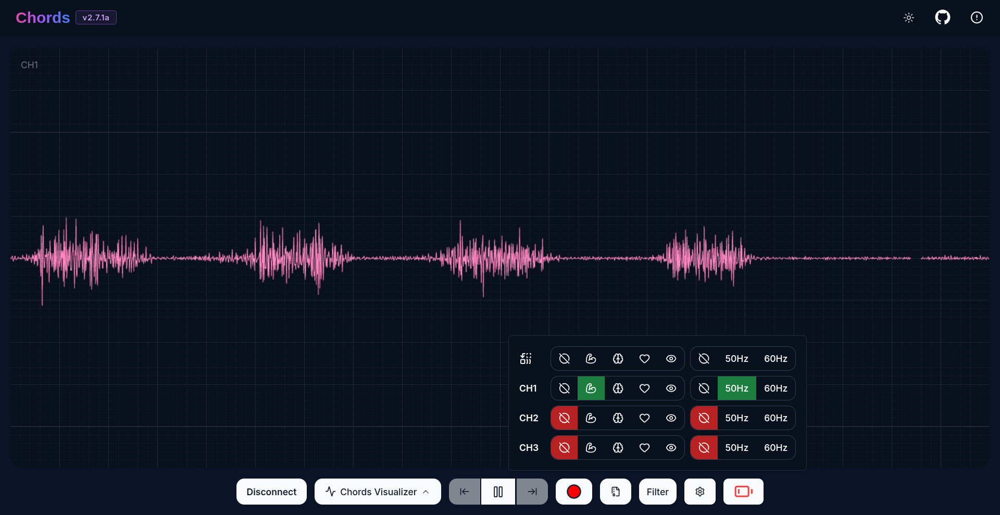
EMG Signal Example#
Visualizing EEG (Electroencephalography) signals#
EEG records the electrical activity of the brain. Use the Brain filter.

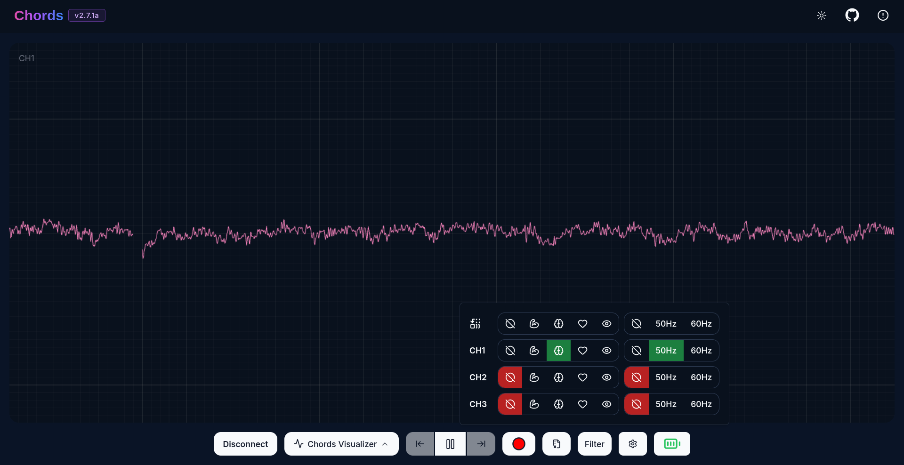
EEG Signal Example#
Tip
To ensure you’re recording a high-quality signal, refer to the detailed guide here: Troubleshooting EEG Signal Quality.
Visualizing EOG (Electrooculography) signals#
EOG measures the electrical potential generated by eye movements. Use the Eye filter.

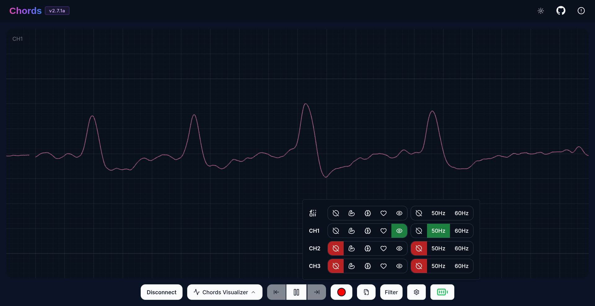
EOG Signal Example#
Visualizing ECG (Electrocardiography) signals#
ECG records the electrical activity of the heart and shows your heart rhythm. Use the Heart filter.

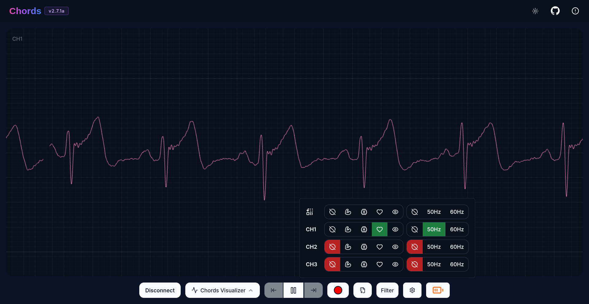
ECG Signal Example#
FFT Visualizer#
Overview#
The FFT Visualizer uses FFT (Fast Fourier Transform) to show the frequencies present in your signal and the power of each EEG band. Use it to see your brainwaves and track your focus in real time.
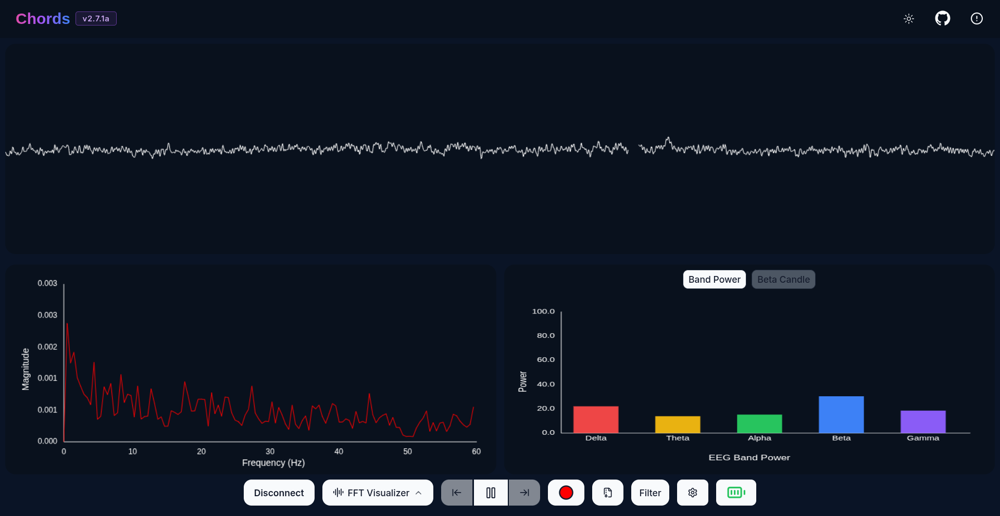
Chords-Web FFT Visualiser#
Features#
Feature |
Description |
|---|---|
Live EEG Band Monitoring |
View real-time EEG band power values to track brain activity. |
Beta Candle |
A candle that glows brighter when your beta (focus) activity is higher. |
Channel Selection |
Choose which channel to analyze from the Settings icon (Channel 1 by default). |
Data Windows |
Pause and go back through the last 5 data windows. |
Recording |
Record the data as a CSV file for further analysis. |
Supported EEG Bands#
Delta (0.5 - 4 Hz) → Associated with deep sleep and unconscious states.
Theta (4 - 8 Hz) → Linked to relaxation, meditation, and light sleep.
Alpha (8 - 13 Hz) → Reflects calm, wakeful relaxation, often seen during closed-eye rest.
Beta (13 - 30 Hz) → Related to active thinking, problem-solving, and focus.
Gamma (30 - 45 Hz) → Involved in high-level cognitive functioning, attention, and perception.
Running the Application#
Connect your board over Serial or BLE (see Connecting to Chords-Web).
Select FFT Visualizer from the app switcher.
Open Settings and select the channel connected to your EEG electrodes.
The top section shows your EEG signal, filtered with the Brain filter (45 Hz low-pass) to remove noise.
The bottom section is divided into two parts:
Left side → The frequency spectrum (FFT) of your signal in Hz.
Right side → Two modes:
Band Power Mode → Real-time power of each EEG band.
Beta Candle Mode → A glowing candle that shows your focus level.
Brighter candle = Higher beta waves = Strong focus.
Dim candle = Lower beta waves = Distraction.
Note
Checkout our YouTube video for more information:
Rep-Forge#
Overview#
Rep-Forge shows the strength of your muscle contractions (EMG) in real time. Use it to monitor your muscles while you work out or during rehabilitation, directly in your browser.
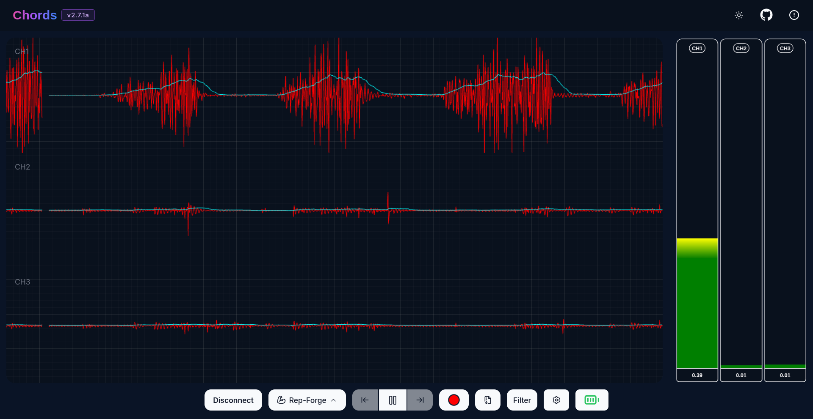
Chords-Web Rep-Forge#
On the left, each channel shows the raw EMG signal (red) with its envelope (blue) on top. On the right, the strength bar of each channel rises as the muscle contracts. In the image above, only CH1 is active.
Features#
Feature |
Description |
|---|---|
Multi-channel EMG |
Monitor up to 6 EMG channels at the same time. |
EMG Envelope |
Shows the envelope of your EMG signal, which follows how strongly your muscle is contracting. |
Live Strength Bars |
A bar for each channel shows the contraction level in real time, with the channel name at the top and the current value at the bottom. |
Filters |
Muscle filter and 50/60 Hz notch filter to remove noise. |
Data Windows & Recording |
Pause and go back through the last 5 data windows, and record to CSV. |
Serial or BLE |
Works with any supported board over Serial, or with the NPG Lite over BLE. |
Running the Application#
Place the electrodes on the muscle you want to monitor and connect them to your BioAmp sensor.
Connect your board over Serial or BLE (see Connecting to Chords-Web).
Select Rep-Forge from the app switcher.
Open Settings and select up to 6 channels.
Contract your muscle and watch the strength bar for that channel go up.
Use Cases#
Strength Training: Quantify muscle activation during lifts or repetitions.
Rehabilitation: Monitor recovery progress in injured muscle groups.
Research: Capture EMG data for neuromuscular studies.
ECG Visualizer#
Overview#
The ECG Visualizer shows your heart rate in real time. It detects the R-peaks (the tallest spike of each heartbeat) in your ECG signal and calculates your heart rate in beats per minute (BPM).
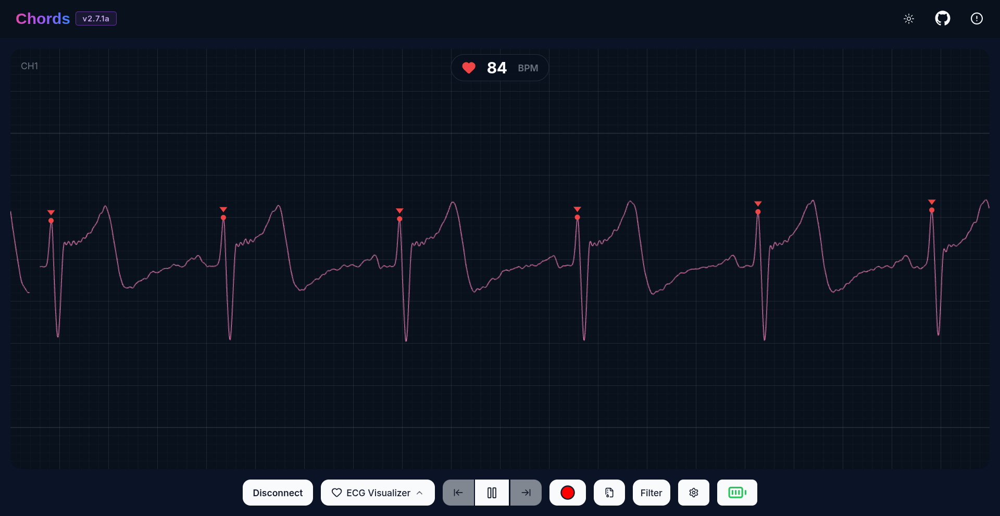
Chords-Web ECG Visualizer#
Each detected R-peak is marked with a red dot and arrow, and your heart rate is shown in BPM at the top.
Features#
Feature |
Description |
|---|---|
Heart Rate (BPM) |
Shows your live heart rate, with a heart icon that beats with each detected heartbeat. |
R-peak Detection |
Detects R-peaks using the Pan-Tompkins algorithm. |
Automatic ECG Filter |
The Heart filter is turned on for all channels automatically, for a clean ECG trace. |
Channel Selection |
Choose which channel to analyze from the Settings icon (Channel 1 by default). |
Running the Application#
Place the ECG electrodes on your body (the electrode placement diagram is shown on the Chords-Web connect page).
Connect your board over Serial or BLE (see Connecting to Chords-Web).
Select ECG Visualizer from the app switcher.
Open Settings and select the channel connected to your ECG sensor.
Sit still and relaxed. After a few heartbeats, your heart rate appears on the screen.
Note
The ECG Visualizer is for learning and experiments only. It is not medical software.
Serial Wizard Plotter & Monitor#
Overview#
The Serial Wizard Plotter & Monitor is a standalone tool in Chords-Web that plots and prints data from any serial device, similar to the Arduino IDE Serial Plotter and Serial Monitor. Unlike the other applications, it works with any sketch - it doesn’t need the Chords firmware.
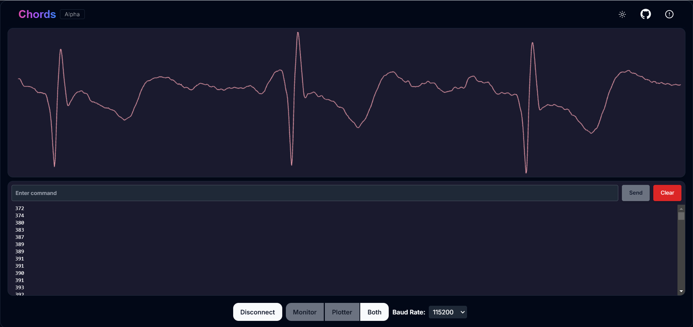
Chords-Web Serial Wizard#
Features#
Feature |
Description |
|---|---|
Dual View Modes |
Switch between the Plotter, the Monitor, or both together. |
Optimized Data Rendering |
Handles high-speed data without cluttering the display, so your plot stays clear and accurate. |
Footer Button Bar |
Switch between viewing modes using the buttons at the bottom. |
Baud Rate Selection |
Choose from 9600, 19200, 38400, 57600, 115200 (default), 230400, 460800 or 921600 baud. |
Navigation Bar |
Switch theme (light/dark), visit the GitHub repository, view contributors or go back to the previous page. |
Running the Application#
Open Chords-Web, click Visualize Now and then click Serial Wizard.
Select the Baud Rate. It must match the value in your sketch’s
Serial.begin().Click Connect and select your board’s port.
Use the footer buttons to switch between the Plotter, the Monitor or both.
Note
Checkout our YouTube video for more information:
Data Format and Data Quality#
Data Format#
This section is for you if you want to use Chords-Web with your own board or firmware. The Chords Arduino Firmware already does all of this, so use it as a reference.
Commands#
Chords-Web sends these text commands to the board over Serial. Each command ends with a newline (\n):
Command |
What the board must do |
|---|---|
|
Reply with its board ID on one line, for example |
|
Start sending data packets. |
|
Stop sending data packets. |
The board ID must be one of the IDs Chords-Web knows: UNO-R3, GENUINO-UNO, UNO-CLONE, NANO-CLASSIC, NANO-CLONE, MEGA-2560-R3, MEGA-2560-CLONE, UNO-R4, GIGA-R1, RPI-PICO-RP2040, STM32G4-CORE-BOARD, STM32F4-BLACK-PILL, NPG-LITE, NPG-LITE-3CH, NPG-LITE-6CH or ESP32-S3. If you use your own board, reply with the ID of a supported board that has the same channel count, ADC resolution and sampling rate (see Supported Boards).
Chords-Web opens the port at 230400 baud, unless it recognizes the board’s USB ID (for example, Arduino UNO R3, Nano and MEGA boards use 115200 baud).
Packet Format#
After START, the board sends one binary packet for every sample:
| 0xC7 | 0x7C | counter | CH1 high | CH1 low | ... | CHn high | CHn low | 0x01 |
0xC7 0x7C: two sync bytes that mark the start of a packet.counter: one byte (uint8_t) from 0 to 255. It goes up by 1 with every packet and starts again from 0 after 255.CH high, CH low: the raw ADC value of each channel, as two bytes in big-endian order (high byte first).0x01: the end byte.
So each packet is 2 × channels + 4 bytes long. For example, a 6-channel board sends 16-byte packets. The board must always send all of its channels, even if only some are selected in Chords-Web.
After decoding, Chords-Web uses each sample as [counter, CH1, CH2, ..., CHn]. This is the same order as the columns in the recorded CSV file.
Checking for Dropped Samples#
Counter: In your recorded CSV file, the
Countervalue should go up by exactly 1 in each row (after 255 it goes back to 0). If it skips a number, samples were dropped.Number of samples: The total number of rows should be close to sampling rate × recording time in seconds. For example, a 10-minute recording at 500 Hz should have about 500 × 60 × 10 = 300,000 samples. A big difference means samples were dropped or the timing has drifted.
Troubleshooting#
“Browser not supported” message
Use the latest version of Google Chrome, Microsoft Edge or Opera on a desktop/laptop. See Browser Compatibility.
My board doesn’t appear in the port list
Make sure you are using a USB data cable, not a charge-only cable.
Close the Arduino IDE Serial Monitor/Plotter and any other app using the port.
On Linux, add your user to the
uucp(Arch/Manjaro) ordialout(Ubuntu/Debian) group (see Connecting over Serial (USB)).On Windows, some boards need a USB driver (see Option 1: Update firmware from Chords-Web (Recommended)).
“Your firmware is not updated” dialog appears
Your board doesn’t have the latest Chords firmware. Click Flash firmware to update it (see Option 1: Update firmware from Chords-Web (Recommended)), or upload it with the Arduino IDE.
My NPG Lite doesn’t appear in the Bluetooth list
Make sure the NPG Lite is switched on and has the BLE firmware (upload it with the NPG Lite Flasher Web or the NPG Lite Flasher).
Turn on Bluetooth on your computer.
Make sure the NPG Lite isn’t already connected to another device or browser tab.
My signal is noisy
Apply the 50 Hz or 60 Hz notch filter, and the filter for your signal type (see Filters).
Unplug your laptop charger while recording.
Check that the electrodes are placed correctly and have good skin contact.
For EEG, see Troubleshooting EEG Signal Quality.
Have a question or found a bug? Raise an issue on the Chords-Web GitHub repository.
Technologies Used#


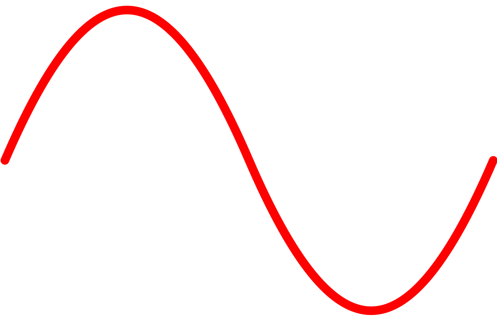
WebGL Plot Real-time plotting with WebGL.

Chords-Web also uses TypeScript, Lucide icons, the Web Bluetooth API (for the NPG Lite) and the WebUSB API (for firmware updates).
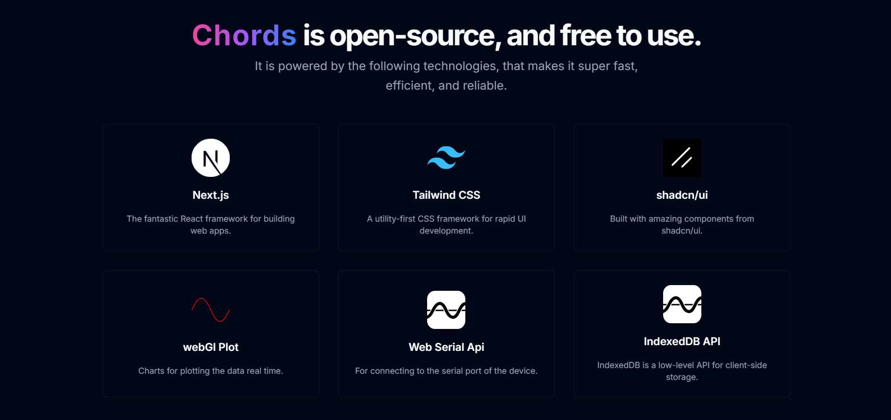
Chords-Web Tech Stack#